One valley.
Nine teams.
One shared pride.
An annual tournament that exists for more than the scoreline — old friends reunite, villages reconnect, and the youth get a stage. This year marked the 8th edition, hosted at Shyala School Football Ground, opened by traditional dance before a single ball was kicked.
8Editions Played
9Villages United
5Cups Won
The Nubri Manaslu CupRivals on the pitch.
Rivals on the pitch.
Neighbours beyond it.
Nine teams bring their own colours, their own stories, and the same love of the game.
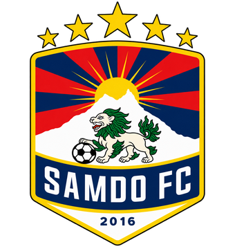
01Samdo FC
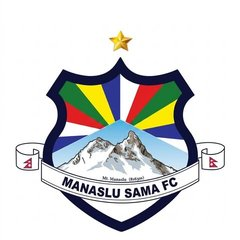
02Sama
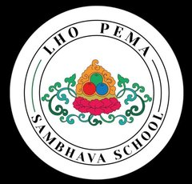
03Shyala School Team
Host Venue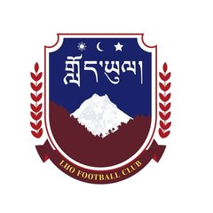
04Lho
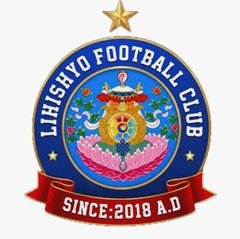
05Sho + Lhi Combined
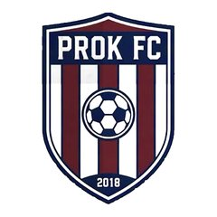
06Prok + Namrung Combined
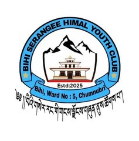
07Bihi
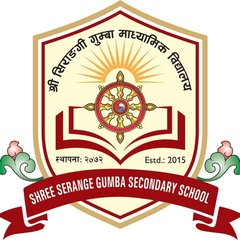
08Serang School Team
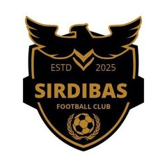
09Sirdibas
The Kit
Different colours.
Different colours.
Same belonging.
Same crest, same village, same reason to put it on — the jerseys Samdo FC has worn into the Nubri Manaslu Cup.
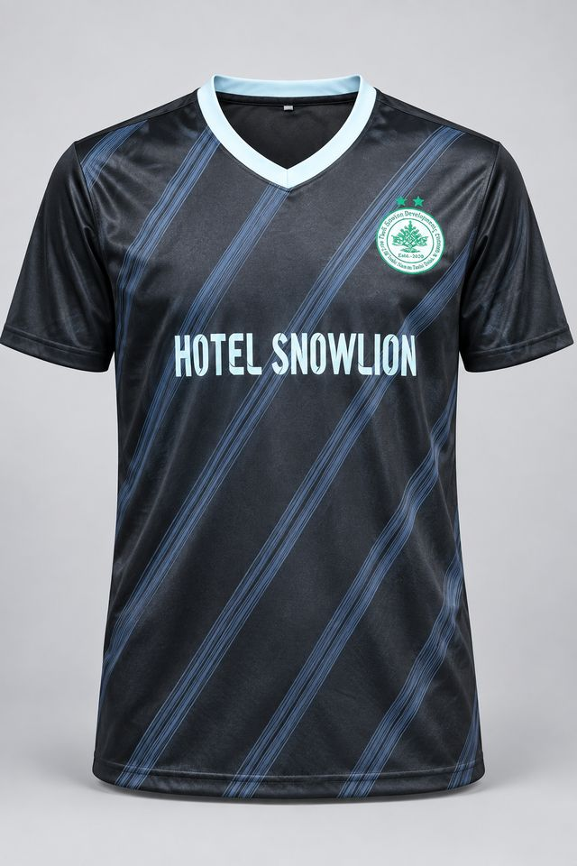
Samdo FC
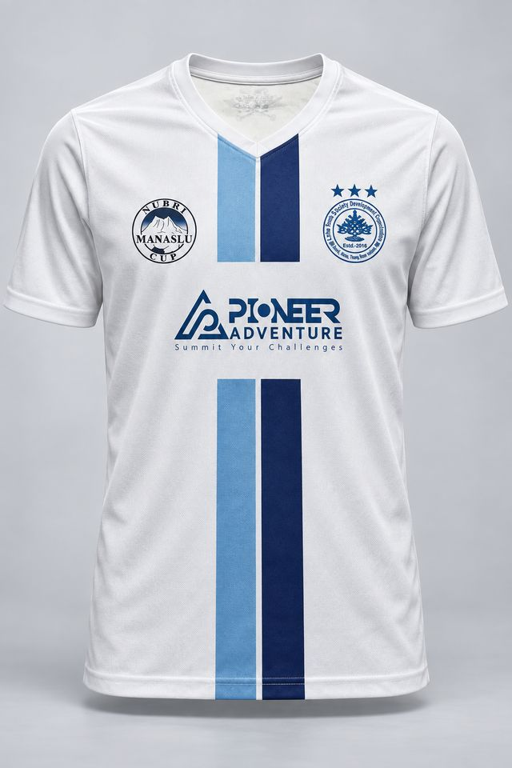
Samdo FC
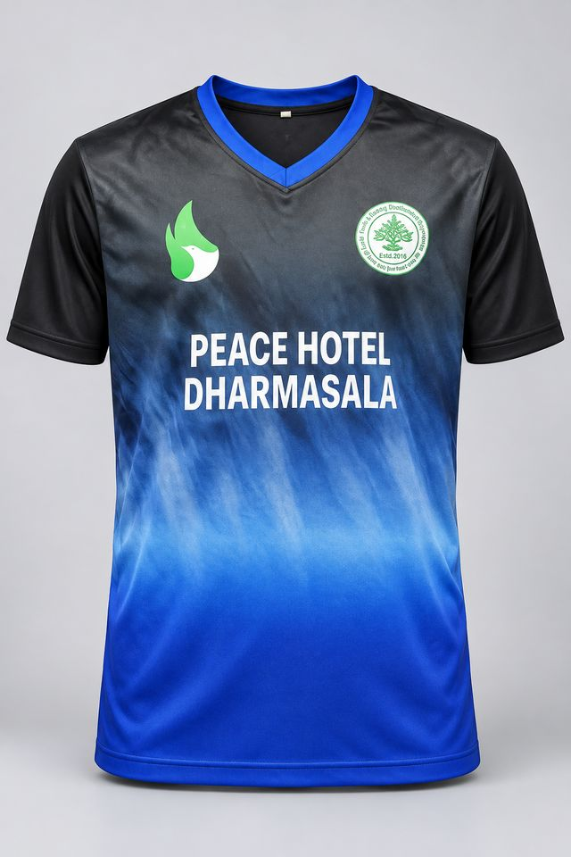
Samdo FC
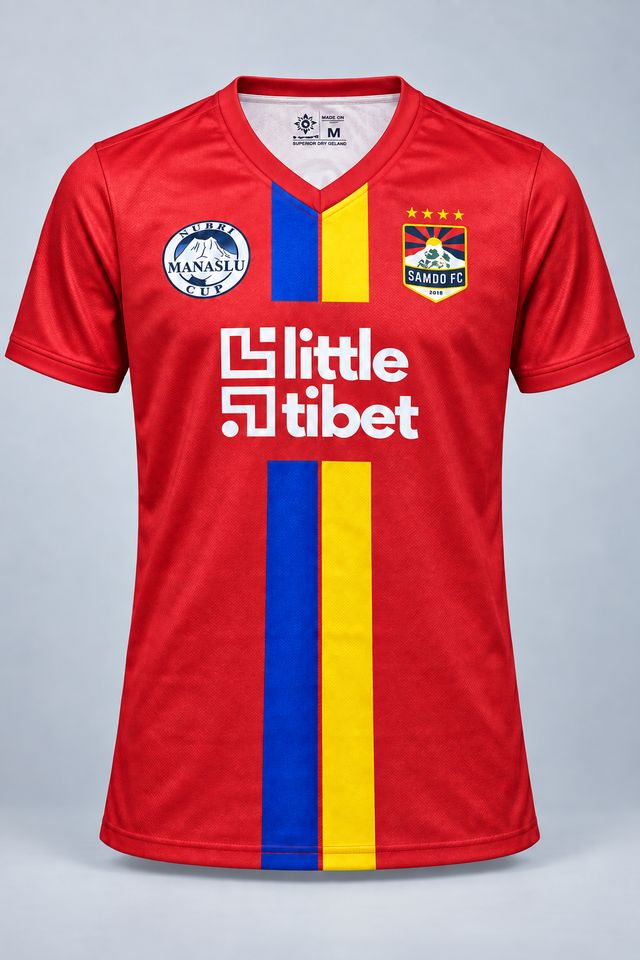